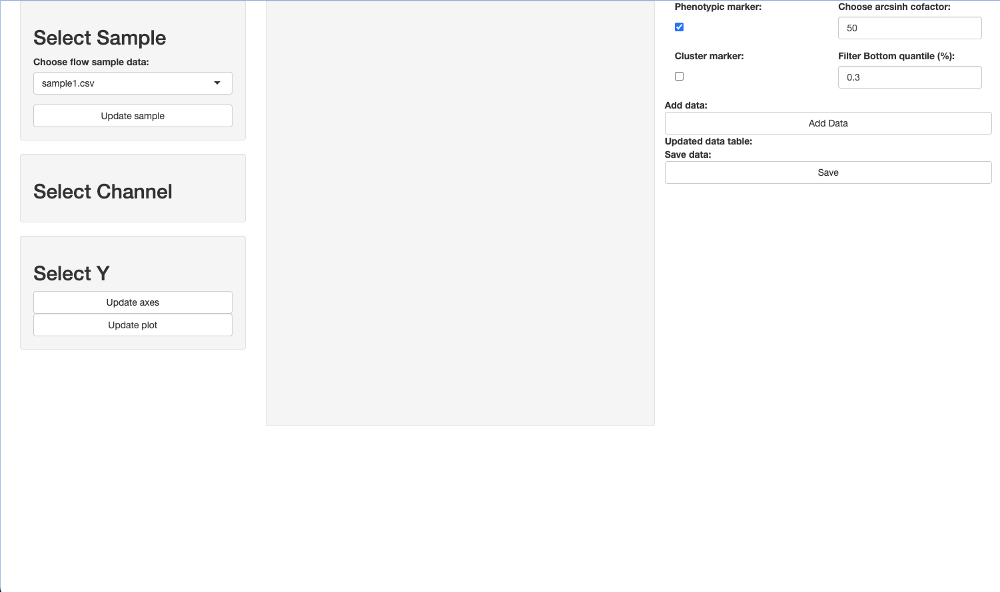

Last updated: 2024-11-22
Checks: 7 0
Knit directory: CVR-site/
This reproducible R Markdown analysis was created with workflowr (version 1.7.1). The Checks tab describes the reproducibility checks that were applied when the results were created. The Past versions tab lists the development history.
Great! Since the R Markdown file has been committed to the Git repository, you know the exact version of the code that produced these results.
Great job! The global environment was empty. Objects defined in the global environment can affect the analysis in your R Markdown file in unknown ways. For reproduciblity it’s best to always run the code in an empty environment.
The command set.seed(20241002) was run prior to running
the code in the R Markdown file. Setting a seed ensures that any results
that rely on randomness, e.g. subsampling or permutations, are
reproducible.
Great job! Recording the operating system, R version, and package versions is critical for reproducibility.
Nice! There were no cached chunks for this analysis, so you can be confident that you successfully produced the results during this run.
Great job! Using relative paths to the files within your workflowr project makes it easier to run your code on other machines.
Great! You are using Git for version control. Tracking code development and connecting the code version to the results is critical for reproducibility.
The results in this page were generated with repository version 9444cc8. See the Past versions tab to see a history of the changes made to the R Markdown and HTML files.
Note that you need to be careful to ensure that all relevant files for
the analysis have been committed to Git prior to generating the results
(you can use wflow_publish or
wflow_git_commit). workflowr only checks the R Markdown
file, but you know if there are other scripts or data files that it
depends on. Below is the status of the Git repository when the results
were generated:
Ignored files:
Ignored: .DS_Store
Ignored: .RData
Ignored: .Rhistory
Ignored: analysis/.DS_Store
Ignored: data/.DS_Store
Ignored: data/merged_Martin_GCA-SB-HealthyAdult_20220119_annotated_TO.rds
Ignored: data/rmds/.DS_Store
Ignored: static/
Note that any generated files, e.g. HTML, png, CSS, etc., are not included in this status report because it is ok for generated content to have uncommitted changes.
These are the previous versions of the repository in which changes were
made to the R Markdown (analysis/apps.Rmd) and HTML
(docs/apps.html) files. If you’ve configured a remote Git
repository (see ?wflow_git_remote), click on the hyperlinks
in the table below to view the files as they were in that past version.
| File | Version | Author | Date | Message |
|---|---|---|---|---|
| html | e9a36e0 | DrThomasOneil | 2024-11-22 | Build site. |
| html | 566e205 | DrThomasOneil | 2024-11-22 | Build site. |
| html | 50a6660 | DrThomasOneil | 2024-11-11 | Build site. |
| html | 4ae72fd | DrThomasOneil | 2024-11-11 | Build site. |
| html | e13bbf0 | DrThomasOneil | 2024-11-11 | Build site. |
| html | 274b373 | DrThomasOneil | 2024-10-16 | Build site. |
| Rmd | 6f0e914 | DrThomasOneil | 2024-10-16 | Update |
| html | 2b49a4e | DrThomasOneil | 2024-10-16 | Build site. |
| html | f1b7785 | DrThomasOneil | 2024-10-16 | Build site. |
| html | 55cb641 | DrThomasOneil | 2024-10-11 | Build site. |
| Rmd | 45fe893 | DrThomasOneil | 2024-10-11 | Update |
| Rmd | 48e3093 | DrThomasOneil | 2024-10-11 | Update apps.Rmd |
| html | 14740d6 | DrThomasOneil | 2024-10-11 | Build site. |
| Rmd | e16e1df | DrThomasOneil | 2024-10-11 | Update |
| html | d05f962 | DrThomasOneil | 2024-10-11 | Build site. |
| Rmd | bc7c46c | DrThomasOneil | 2024-10-11 | Update |
| html | e15a979 | DrThomasOneil | 2024-10-11 | Build site. |
| html | ccb4100 | DrThomasOneil | 2024-10-11 | Build site. |
| html | c6a226c | DrThomasOneil | 2024-10-11 | Build site. |
| Rmd | aa8d999 | DrThomasOneil | 2024-10-11 | Update |
| html | 422e806 | DrThomasOneil | 2024-10-11 | Build site. |
| Rmd | 630cbd1 | DrThomasOneil | 2024-10-11 | Update |
| html | ed05ec9 | DrThomasOneil | 2024-10-11 | Build site. |
| Rmd | 8c2ad9c | DrThomasOneil | 2024-10-11 | Update |
| html | 6aa27db | DrThomasOneil | 2024-10-11 | Build site. |
| Rmd | 87ddf27 | DrThomasOneil | 2024-10-11 | Update |
| html | 4f0af55 | DrThomasOneil | 2024-10-11 | Build site. |
| html | 90f2487 | DrThomasOneil | 2024-10-11 | Build site. |
| html | da5b66d | DrThomasOneil | 2024-10-11 | Build site. |
| Rmd | 922e776 | DrThomasOneil | 2024-10-11 | Update |
| html | 402f8cb | DrThomasOneil | 2024-10-11 | Build site. |
| Rmd | 614b07f | DrThomasOneil | 2024-10-11 | Getting Started file |
| Rmd | 907e123 | DrThomasOneil | 2024-10-11 | Files and script added for Flow App |
This page will contain instructions on how to use different shiny apps for surface level analysis of flow and spatial/single cell transcriptomic data.
I’ve built a flow cytometry app which automates a lot of the repetitive processes involved in the Spectre R package.
Particularly, it allows you to set individual cofactors for scaling channel values. The default is to set a single cofactor, which may be comparable to setting the same axes setting in FlowJo for all channels. Each channel may need to be adjusted individually, and this app allows you to do this comparatively rapidly.
The authors of the Spectre site provide more details on how to use the app, such as transformations and choosing markers for clustering.
I’ve made a template folder for this analysis: download
The folder structure when unzipped will be:
flow_template
|
|_app_flow.R
|
|_flow
| |_sample1.csv
| |_sample2.cs
|_meta
|_outputOpen the app_flow.R
file.
Here you’ll see a few lines that you need to run first.
To set your working directory:
wd <- dirname(rstudioapi::getActiveDocumentContext()$path)
setwd(wd)
In case you’ve buggered with the folder structure:
if(!file.exists("flow")){dir.create("flow")}
if(!file.exists("meta")){dir.create("meta")}
if(!file.exists("output")){dir.create("output"); dir.create("output/rds"); dir.create("output/features")}
And packages you’ll need to install and load:
library(Spectre)
library(Seurat)
library(ggplot2)
library(shiny)
library(DT)
library(data.table)From FlowJo, you’ll want to export your parent population (e.g. CD4+ T cells, MNPs, B cells, All Immune cells) as a csv.
You’ll need to export as Scale values, and make sure you select compensated channels.
Export/move these files to the /flow folder.
In the original Spectre script, you have the option to set a single cofactor. This is almost equivalent to setting the scale once in flowjo to apply to all channels. We know using tissue and different samples/batches sometimes requires drastically different transformations.
The Spectre site provides details on transformations
To do this manually, I might think would be a bit of a nightmare. So I’ve made the first app so that you are able to view and set thresholds per marker per sample.
To get started, run the app using:
source("https://raw.githubusercontent.com/CVR-MucosalImmunology/Rshiny/refs/heads/main/flow_setup.R");shinyApp(ui,server);rm(ui,server)

arcsinh cofactor and filter
values on the right for each channel. Adjust the filter to remove lower
outlier values. Increasing the cofactor value squishes
values into the negative more. You might notice that when you use a
value that is two low, it starts to split the negative into two
populations. This value therefore needs to be somewhat informed by the
user.Add Data.
You’ll notice that the table on the right hand side updates.Save when you’re done. This should then add a
.csv file to the meta/ folder in your root
directory. If you want to come back and adjust any values, you have the
option to do so by just directly editing this file.After you’ve set the co-factors and filters, you can run the rpca integration app.
source("https://raw.githubusercontent.com/CVR-MucosalImmunology/Rshiny/refs/heads/main/flow_integration.R");shinyApp(ui,server);rm(ui,server)
This app takes the files in the flow/ and corresponding
meta/ folder. This is where it becomes very efficient.
You can choose which samples you want to integrate. It’ll then load the markers to choose from. Click Run RPCA and wait. Depending on the number of samples, it may take a while. If you’re worried, go to the RStudio window and you’ll see the functions running in the background.
Some things to consider:
To do this manually could take quite a while. Now you’re able to
rapidly remove samples that aren’t working, remove or add markers to
check how they alter the clustering, etc.
You can now check where markers are lying on the Umap by selecting a marker and clicking Update.
You can also very rapidly test out different k cluster values. Change
the clusters value and click Update K.
When you’re happy with integration and SOMS clustering, you can
export all data and graphs. Change the prefix to make the
output files unique (in case you want to export more than once).
What is exported is:
sessionInfo()R version 4.4.0 (2024-04-24)
Platform: aarch64-apple-darwin20
Running under: macOS Sonoma 14.3
Matrix products: default
BLAS: /Library/Frameworks/R.framework/Versions/4.4-arm64/Resources/lib/libRblas.0.dylib
LAPACK: /Library/Frameworks/R.framework/Versions/4.4-arm64/Resources/lib/libRlapack.dylib; LAPACK version 3.12.0
locale:
[1] en_US.UTF-8/en_US.UTF-8/en_US.UTF-8/C/en_US.UTF-8/en_US.UTF-8
time zone: Australia/Sydney
tzcode source: internal
attached base packages:
[1] stats graphics grDevices utils datasets methods base
other attached packages:
[1] workflowr_1.7.1
loaded via a namespace (and not attached):
[1] vctrs_0.6.5 httr_1.4.7 cli_3.6.3 knitr_1.48
[5] rlang_1.1.4 xfun_0.48 stringi_1.8.4 processx_3.8.4
[9] promises_1.3.0 jsonlite_1.8.9 glue_1.8.0 rprojroot_2.0.4
[13] git2r_0.33.0 htmltools_0.5.8.1 httpuv_1.6.15 ps_1.8.0
[17] sass_0.4.9 fansi_1.0.6 rmarkdown_2.28 tibble_3.2.1
[21] jquerylib_0.1.4 evaluate_1.0.1 fastmap_1.2.0 yaml_2.3.10
[25] lifecycle_1.0.4 whisker_0.4.1 stringr_1.5.1 compiler_4.4.0
[29] fs_1.6.5 pkgconfig_2.0.3 Rcpp_1.0.13 rstudioapi_0.17.0
[33] later_1.3.2 digest_0.6.37 R6_2.5.1 utf8_1.2.4
[37] pillar_1.9.0 callr_3.7.6 magrittr_2.0.3 bslib_0.8.0
[41] tools_4.4.0 cachem_1.1.0 getPass_0.2-4